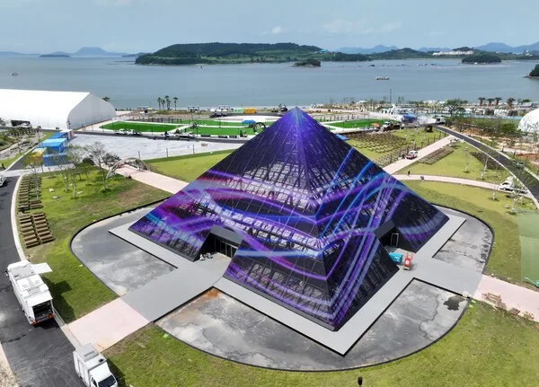
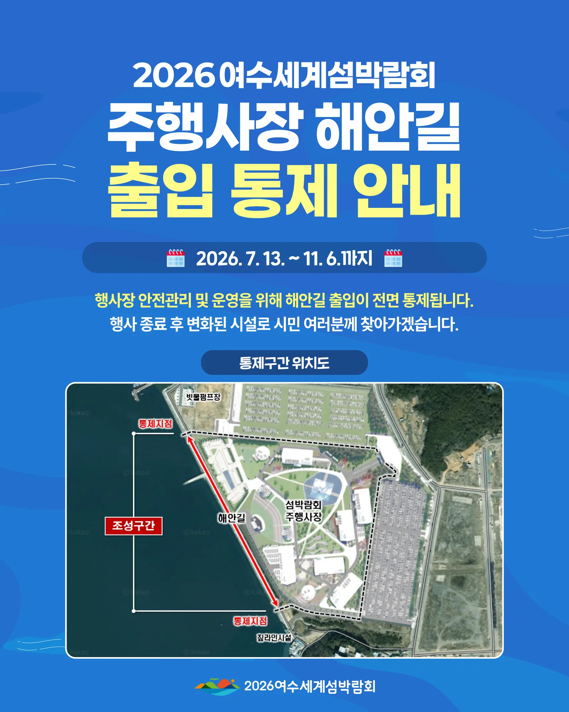
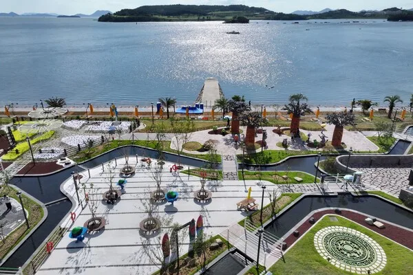
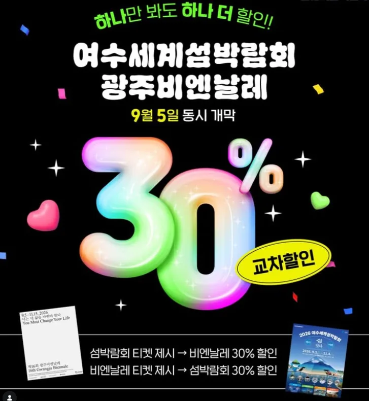
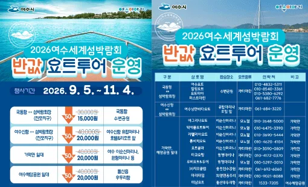

▲ 2026 여수세계섬박람회 주제관 '피라미드 전시관' 전경. 9월 5일부터 11월 4일까지 두 달간 열린다 ⓒ 연합뉴스
2026 여수세계섬박람회는 9월 5일부터 11월 4일까지 두 달에 걸쳐 열리는 대형 행사다. 기간이 긴 만큼 여유 있게 방문할 수 있을 것 같지만, 실제로는 주말·연휴 방문 시 대기 시간을 각오해야 한다.

▲ 여수 오동도 등대. 여수세계섬박람회는 오동도 등 여수 해양 관광자원을 배경으로 열린다 ⓒ CarPrism
1. 두 달짜리 행사 — 일정은 여유롭다
여수세계섬박람회는 9월 5일부터 11월 4일까지 열리는 만큼, 특정 주말에만 몰리는 다른 단기 축제와 달리 방문 일정을 비교적 자유롭게 조정할 수 있다. 운영시간도 주간(09:00~17:00)과 야간(17:00~21:00)으로 나뉘어 있어, 낮과 밤 어느 시간대에 방문하든 프로그램을 즐길 수 있다.
2. 자가용이라면 — 주차보다 셔틀부터

▲ 주행사장 해안길 출입 통제 안내도. 2026년 7월 13일부터 11월 6일까지 안전 관리를 위해 해안길이 전면 통제되며, 지도 우측에 대형 임시 주차장이 조성돼 있다 ⓒ 2026여수세계섬박람회 조직위원회
자가용으로 방문한다면 망마경기장이나 국동 임시 주차장에 차를 세운 뒤 셔틀버스로 갈아타는 동선이 권장된다. 행사장 바로 인근에 직접 주차하려는 시도는 대기 시간만 늘릴 가능성이 크다. 특히 주행사장을 감싸는 해안길은 행사 기간 내내 전면 통제되므로, 내비게이션에 표시되는 해안 진입로를 그대로 따라가면 우회하느라 시간을 허비할 수 있다. 외곽 주차 후 무료 셔틀을 이용하는 방식이 결과적으로 더 빠르고 편하다는 것이 현지 안내의 공통된 조언이다.
3. 주말·연휴엔 대기 시간을 각오하자

▲ 박람회장 해안 광장. 바다를 낀 산책로와 쉼터가 조성돼 있어 주말이면 방문객이 몰린다 ⓒ 연합뉴스
박람회 기간이 길다고 해서 주말·연휴 혼잡까지 피해가는 것은 아니다. 특히 주말과 연휴에는 입장·출차 대기 시간이 길어질 수 있으므로, 방문 전 실시간 교통정보를 확인하는 것이 좋다. 가능하다면 평일 방문이 대기 시간을 줄이는 가장 확실한 방법이다.
4. 주행사장과 부행사장 — 어디까지 갈 것인가

▲ 여수 해안 전경. 주행사장인 진모지구 인근에도 이 같은 해양 경관이 펼쳐진다 ⓒ CarPrism
행사장 구성
- 주행사장: 여수세계박람회장(진모지구)
- 부행사장: 개도, 금오도, 여수세계섬박람회 일원
주행사장만 둘러본다면 하루 일정으로도 충분하지만, 개도·금오도 등 부행사장까지 포함하려면 이동 수단(배편 등)을 별도로 계획해야 한다. 방문 목적에 따라 주행사장 중심의 당일 코스와, 섬까지 포함한 1박 2일 코스를 구분해 계획하는 것이 효율적이다.
5. 섬까지 이동은 어떻게 — 여객선 반값 지원사업

▲ '섬박람회 기간 여객선(도선) 반값 운임 지원사업' 안내 포스터. 2026년 9월부터 12월까지 예산 소진 시까지 운영된다 ⓒ 여수시
부행사장인 개도·금오도 등 유인도를 여객선(도선)으로 오가는 타지역 방문객에게는 운임의 50%를 지원하는 사업이 함께 진행된다. 유류할증료와 터미널이용료는 지원 대상에서 제외되며, 차량 운임이 아닌 여객 운임만 해당된다. 별도 신청 절차 없이 예매·발권 시 할인 운임이 자동 적용되는 방식이라 번거롭지 않다. 다만 녹동(고흥)~거문 항로 여객선 2척과 한국해운조합 운임지원시스템을 사용하지 않는 도선 3척은 지원 대상에서 제외되므로, 예매 전 해당 항로를 확인하는 것이 좋다.
여객선 반값 운임 예매 사이트6. 반값 요트투어로 즐기는 특별한 하루

▲ '반값 요트투어 운영' 안내 포스터. 국동항·여수산단 등에서 출발하는 요트투어가 기존 요금의 절반 수준으로 운영된다 ⓒ 여수시
배편으로 섬을 오가는 것 외에, 박람회 기간에는 국동항·여수산단 등지에서 출발하는 요트투어도 반값에 이용할 수 있다. 왕복 3만~4만 원대였던 요금이 1만5,000~2만 원대로 낮아져, 대중교통이나 여객선과는 또 다른 방식으로 바다 위에서 섬박람회장을 둘러볼 수 있다. 상품별 운항 시간과 승선 인원이 제한적이므로 사전 예약이 필요하다.
7. 광주비엔날레와 함께 보면 30% 할인
▲ 여수세계섬박람회-광주비엔날레 티켓 교차할인 이벤트 안내. 두 행사 모두 9월 5일 동시 개막했다 ⓒ 여수시
공교롭게도 제16회 광주비엔날레(9월 5일~11월 15일)도 섬박람회와 같은 날 개막했다. 섬박람회 입장권을 제시하면 광주비엔날레 입장료를 30% 할인받을 수 있고, 반대로 비엔날레 티켓을 제시해도 섬박람회 입장료가 30% 할인된다. 여수와 광주를 오가는 동선을 짤 수 있는 방문객이라면 두 행사를 함께 묶어 여행 계획을 세워볼 만하다.
8. 정리
체크포인트
- 여수세계섬박람회는 9월 5일~11월 4일 두 달간 열린다.
- 자가용은 망마경기장·국동 임시 주차장 후 셔틀 환승이 기본 동선이며, 주행사장 해안길은 행사 기간 내내 통제된다.
- 주말·연휴에는 입장·출차 대기 시간이 길어질 수 있다.
- 개도·금오도 등 부행사장은 여객선 반값 지원이나 반값 요트투어로 이동할 수 있다.
- 같은 날 개막한 광주비엔날레와 티켓 교차할인 30% 이벤트도 놓치지 말자.